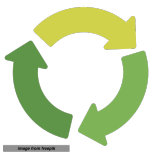

Graph-Based Machine Learning and Analytical Systems Engineering
I help organizations transform operational data into repeatable analytical systems for monthly and quarterly decision-making. My work focuses on the full analytical lifecycle: dataset modernization, metadata capture, feature engineering, machine learning, and knowledge preservation.
Analytical Systems Beyond Isolated Models
Modern machine learning systems fail less from model limitations than from fragmented analytical context, disconnected workflows, weak semantic lineage, and poor interpretability across enterprise environments.
My work focuses on solving analytically complex business problems with measurable operational and decision-making impact. This includes building systems that preserve relationships between data, models, workflows, metadata, and operational knowledge through graph-oriented machine learning systems, reproducible analytical infrastructure, optimization frameworks, and interpretable statistical learning systems designed for enterprise and research use cases. KMDS is a tool that I have built to support this, please see the GitHub repository for more information.
Technical Focus Areas
- Statistical Learning Systems
- Graph Machine Learning
- Analytical Infrastructure
- Optimization & Recommendation Systems
- Explainable AI Systems
- Knowledge Graph Systems for ML & AI system explainablity and traceablity
Selected Publications
Selected publications and research contributions spanning scalable statistical learning, graph-oriented analytical systems, optimization, and enterprise-scale machine learning infrastructure are available on my Google Scholar profile.
Research Philosophy
I am interested in analytical systems that combine mathematical rigor, interpretability, graph-based representations, scalable systems engineering, and operational reproducibility within enterprise environments.
This intersection between statistical learning, systems architecture, and knowledge representation forms the foundation of my current work.
Current Areas of Interest
- Graph-centric machine learning systems
- Knowledge-oriented analytical infrastructure
- Interpretable statistical learning
- Analytical lineage and reproducibility
- Enterprise-scale ML systems architecture
- Semantic systems for applied AI
Contact
For discussions related to analytical systems architecture, graph machine learning, optimization systems, interpretable ML infrastructure, and research collaborations. Available for contract and advisory engagements with U.S. organizations